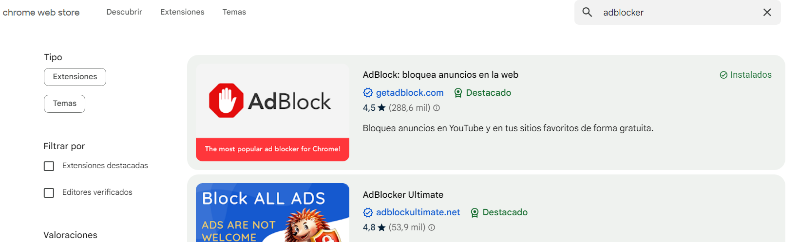
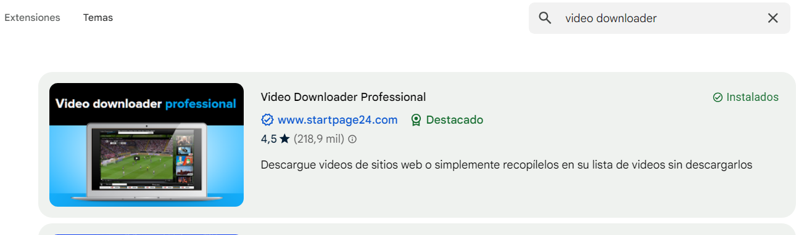

Existen algunas extension del navegador utiles para ver pelis, algunas son:
Conviene utilizar un navegador que bloquee anuncios y ventanas
emergentes automáticamente pero también puedes instalar una extensión
en Chrome que lo haga, para ello pon Chrome web store en el navegador
y busca adblocker
Algunas paginas no permiten el uso de los bloqueadores
de anuncios por lo que tendrás que desactivarlo

Hay extensiones que permiten descargar videos incrustados en paginas web,
no siempre son útiles ya que algunas páginas no tienen el video completo y
se va enviando poco a poco pero en ocasiones puede ser útil para descargar
un video o película
